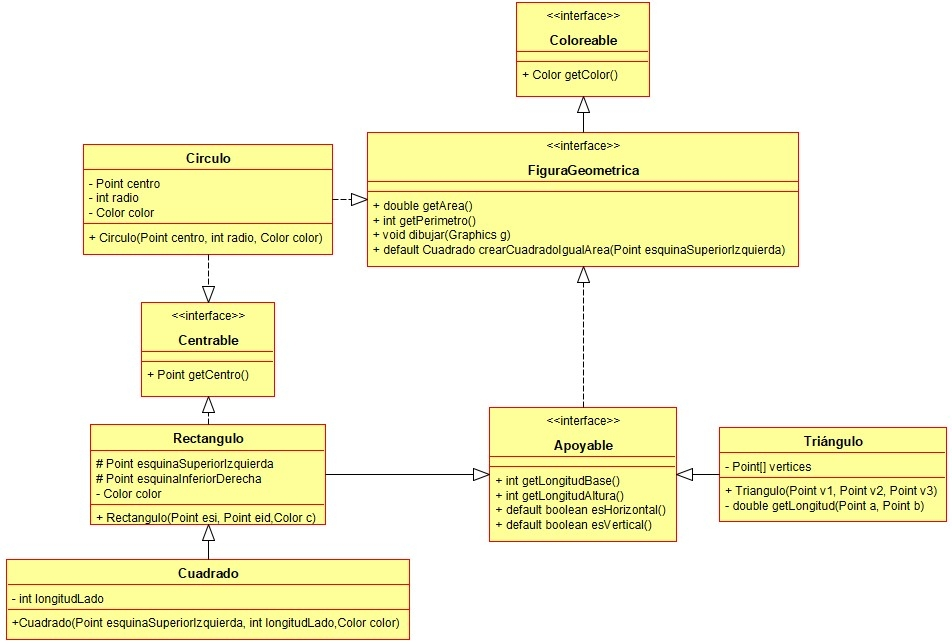

Ejercicio 28 : Programa las clases Rectángulo y Cuadrado.

-
Rectángulo: Clase que representa un rectángulo definido por los dos puntos que se pasan como parámetro. Uno tiene las coordenadas de la esquina superior izquierda del rectángulo y el otro las de la esquina inferior derecha.
-
Cuadrado: Tipo de rectángulo que tiene todos sus lados iguales. Está definido mediante la longitud de su lado y el punto cuyas coordenadas son la esquina superior izquierda del cuadrado.